1926—The New-Way Course in Fashionable Clothes-Making
Lesson 11—Pipings
Pipings—Their Purpose
What would children's clothes be without piping! There are pipings to finish the little collar and cuffs on the simple gingham frock for school. There are pipings to add a smart touch of color to the little white linen dress for more important occasions. And there are pipings on the "best dress" itself—a timid, half-concealed bit of piping at the neck and perhaps around the cuffs and belt, to suggest just the right touch of youthfulness combined with style.
But while pipings are most attractive as trimmings on children's clothes, they are by no means confined to the clothes for younger folks. We find pipings lending smartness and neat finish to trim tailored frocks of serge and tricotine, and imparting gay touches to the solid-color summer dress of linen or chambray. We even find narrow little pipings peeping cautiously from behind the ruffles or lace edges of blouses and waists, adding an unexpected touch of color that is most pleasing.
And so you see that the piping serves a quite definite purpose, indeed. As a trimming, it may be used with striking simplicity all by itself, or with attractive contrast in combination with ruffles, tuckings, lace edges or other trimmings. But an ill-made piping defeats its own purpose, for instead of adding to the charm and beauty of the finished garment, it detracts from it. It is important, therefore, not only to know how to make pipings and how to apply them, but how to make and apply them correctly, neatly.
To make a perfect piping, the material must be on a true bias otherwise it will not lay flat. To make a perfect bias edge, fold a straight crosswise and lengthwise line together, and cut on the fold. Keep this line perfect at each cutting. Do not cut very short lengths of piping, as this brings the seams too close together, and as the piping is applied as a trimming it should contain as few seams as possible. You realize, of course, that an unsightly piping can add nothing to the appearance of the dress or blouse you are making.
Piped Facing (Illustration XI-1, 2 and 3)
Let us first study piped facings. This type of trimming is used frequently in making children's clothes, and also clothes of heavier materials for the folks-who-are-older. Follow the directions carefully and practice on small pieces of muslin until you can make this trimming perfectly.
- Obtain a perfect bias.
- Allow one-fourth of an inch for the margin.
- Add the width of piping desired.
- Add the width of facing desired.
- 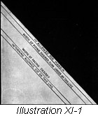Add one-fourth of an inch for the finish of the facing. (Illustration XI-1)
- Cut the facing the exact length of the edge to be faced and the width of the margin, piping the facing and the finish as in Illustration XI-1. Join pieces if necessary and press.
- Turn under the edge of the garment and baste.
- Turn under the edge of the facing on the line of the width of the facing.
- 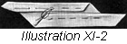Turn under one-fourth of an inch on the opposite edge of the facing. Illustration XI-2
- 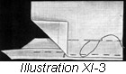 Now apply the facing as a set-on facing (Lesson 8) allow the width of piping to extend below the garment. Illustration XI-3.
- Finish with either hand or machine stitching. If desired, the lower edge may be stitched very close to the edge of the garment and the upper edge of the facing hemmed down with any hemming stitch. All stitches used in applying piping should be as small and close together as the material will allow.
To 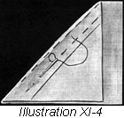Cut and Fold a Bias Piping (Illustration XI-4)
- Fold the material to be used for piping to obtain a perfect bias.
- Baste carefully along the edge of this fold.
- Mark the width that the piping is to be with tailor's chalk, using a yard stick to keep the lines straight. Keep the two thicknesses of the material firmly together with pins.
- Cut the piping one-fourth of an inch beyond this mark.
- If it is necessary to joins trip, loosen the basting at the end of the piping and join the pieces with plain machine stitched seams. Remember always to join lengthwise edge to lengthwise edge, and crosswise edge to crosswise edge. Press the seams open.
- Baste at the edge of the fold where the basting was removed to allow piecing.
Double 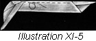Bias Fold (Illustration XI-5)
Make a perfect bias. Measure twice the width desired for piping plus one-half of an inch on each edge for finishing. Baste as for bias piping.
- If necessary, join strips as for bias piping.
- Turn one-quarter inch to wrong side on each edge and baste as shown in Illustration XI-5.
To Apply Bias Piping
Piping may be applied as facing as described under "Piped Facing" or it may be applied between seams. Sometimes it is applied on the edge of a garment. Both methods will be taken up here in detail; study them carefully for you will find many occasions to use them later. When piping is used on a faced edge of a garment it should be set between the turned edge of the garment and set on facing.
Piping Applied in Seams (Illustration XI-6 and 7)
First let us see how pipings may be applied between seams. This imparts a neat finish to the garment, and if in contrasting color adds an attractive bit of trimming.
- Turn the edge of the upper portion of the garment to the wrong side of the material.
- 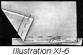 Baste the piping to this edge, allowing the piping to extend beyond the turned edge just the width desired. Illustration XI-6.
- Turn the edge of the under portion of the garment to the right side.
- 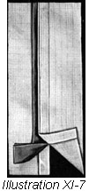 Place the upper portion of the garment to which the piping is basted over the under portion which has the edge turned to the right, thus covering the raw edges. Illustration XI-7.
- Baste and stitch.
Note: Practice this method of between-seam piping with small pieces of muslin or nainsook. Follow the directions carefully, step by step, and you will have no trouble.
Applying 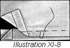Double Fold Piping (Illustration XI-8)
Where a neatly finished edge is desired, a fold is used in applying the piping. It is most effective on children's clothes.
- Make a turn to the wrong side of the edge of the garment. Make this turn very narrow if only one row of stitching is desired on the right side. For two rows of stitching, both this turn and the fold must be wider.
- Baste the prepared double fold over the turned edge of the garment, allowing the piping to extend beyond the turned edge as much as was planned for in cutting the piping.
- Stitch on turned edge. Other rows of stitching may be added above this if desired, or the piping may be put on by hand using the blind stitch. (Lesson 3) If the finishing is done by hand, the turned edge of the piping must be stitched before being applied.
Milliners' Bands and Folds
To achieve a very smart finish on dresses made of heavy materials such as serge and tricotine, the dressmaker borrows a trimming idea from the milliner. The milliner's bands, as they are called, are flat folds usually made of contrasting materials, affording a neat finish and trimming. They must be made with care, cut exactly right and applied neatly—otherwise they defeat their own purpose and mar the appearance of the garment instead of enhancing it.
To 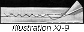Make Milliners' Bands (Illustration XI-9)
- 1. Cut the band on a true bias, two and one-half times the width that the finished band is to be. Join if necessary, using the Plain Seam. (Lesson 4) All seams should be pressed flat.
- Turn one edge to the wrong side, making this turn the width the band is to be.
- Fold the other edge to cover this raw edge. If done correctly, this turn will be one-half the width that the finished fold is to be.
- Catch-stitch this edge to one thickness of the material, being extremely careful that no stitches show on the right side of the fold.
- In applying these bands to the garment, the blind stitch should be used.
To 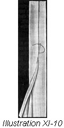Make Milliners' Folds (Illustration XI-10)
- Cut the same as for milliners' bands.
- Make a fold to the wrong side of the materials, one-third the width of the finished fold.
- Now make a narrow turn to the wrong side on the opposite edge.
- Bring this last turned edge to cover the raw edge and baste.
- Finish with blind stitch, and apply to the garment with the blind stitch.
This completes the lesson on pipings. If you have studied correctly, you should now be able to apply neat, well-made pipings to facings, to the edge of garments and between seams. You should be able to apply smart milliners' bands and folds to dresses as trimmings, and devise many different ways of combining piping with folds and seams to achieve attractive trimming innovations.
Notice pipings on the dresses and blouse in the shop windows. See how they can either add or detract from the charm of a garment. Study them carefully—you can learn a great deal that is of value by studying the kind of clothes that are made with a great regard for style effect rather than good workmanship.
Above all, do not leave the lesson on pipings until you are absolutely sure that you have mastered it. Then proceed to cording—another type of trimming which is quite as neat and simple as piping, but a trifle more pronounced.
Cording
In her triumphant march through the centuries, Fashion persists in reverting to the cording as a trimming. We find gold cordings winding their devious ways on the otherwise dignified frocks of the nineteenth century. We find delicate cordings applied with infinite pains to the exquisite French gown of the eighteenth century. Even as far back as the time of Queen Elizabeth we find a suggestion of cording in the gaudy crinolines and brocades of the ladies-of-the-court. And now in the twentieth century we find cording enjoying a greater vogue than ever before.
But like piping, cording must be well made and well applied before it can claim any distinction as a trimming. There is nothing quite as smart and attractive as perfectly made and applied cording; but there is nothing quite as ugly as carelessly made and untidily applied cording that detracts from the other charms of the garment. This is forcibly demonstrated in ready-to-wear clothes. You know how unattractive a dress or blouse appears if uneven, ill-made cording is used as a trimming. Rather a frock entirely simple than one marred with trimming that indicates poor workmanship!
You will find many interesting occasions to apply cording to frocks and blouses. Later when you do your own designing, when your create your own individual styles, you will be able to choose from a wide variety of smart trimmings. And it is then that your own taste in clothes, your own artistic interpretation of dress, will be portrayed. Your taste will decide when pipings are to be used, and when cordings, when ruffles are most effective, and when lace should be the sole trimming. But now your duty is to learn in detail how to make these trimmings, so that when the time comes to apply them to actual clothes you will have no trouble whatever.
Cording on the Sewing Machine
Though cording itself has remained unchanged as a trimming, the method of applying it has changed. Like everything else modern, we find that there is an entirely new quick way of making and applying smart cording. The machine method, of course. But the cording foot is not included in your box of attachments and if you wish to learn the machine method of making cording you must purchase this attachment from your sewing machine dealer. It can be obtained at a very small cost to you.
If you are unable to obtain the cording attachment, it will be necessary for you to draw the cording through the piping after the stitching is completed. This process is just as simple, but requires a little more time. Following is the method of using the cording attachment on your sewing machine.
- Cut the piping the desired width, inserting the cord between the fold, on the line which marks the edge of the piping.
- Baste as close to the cord as possible, using even basting.
- Apply to the garment by basting the turned edge of the garment as close to the cord as possible, using even basting.
- To finish, stitch very close to the edge, using the cording foot attachment.
You will find that you now have a neat, well-made cording that will make a smart trimming when applied to dresses, skirts or waists.
Drawing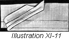 Cord in Piping (Illustration XI-11)
Without the cording attachment, the cord will have to be drawn through the piping separately. Care must be taken to have the piping the correct size for the cord—just wide enough to admit it and hold it snugly. If the piping is too narrow you will have difficulty in drawing the cord through; if it is too wide, the cord will not be held firmly and the neat finish will be sacrificed. Always test the size of the piping before stitching it.
When the piping is completed, draw the cord through with a bodkin, or in any other manner most convenient for you.
Corded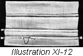 Tucks (Illustration XI-12)
You will find corded tucks quite attractive—especially on children's clothes. Simply make the tucks the size you want them and draw the cord through as you did in piping. But sometimes you will find it necessary to insert the cord as the tuck is being made. This process is a little more difficult and requires more care.
- First mark the line of turn for the tuck.
- Hold the cord along this line, fold over, and make the tuck using small running stitches.
- This tuck may be basted and stitched down with the cording attachment, if desired.
- When drawing cord through tucks or piping, the best plan is to cut away a few strands at the end of the cord to bring it to a point, sew this end of the cord firmly to a round bodkin, wrapping the cord where it is attached to the bodkin very tightly. Be careful not to bunch the cord, and you will find that it draws through the tuck or piping very easily.
To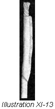 Cover Cord (Illustration XI-13)
- Make a bias strip wide enough to cover the cord, allowing enough for seams.
- Fold this strip through the center with the wrong side out.
- Stitch far enough from the turned edge to make a casing large enough to draw the cord through. Attach the cord to the bodkin as taught under corded tucks.
- Insert the point of the bodkin in the casing made for the cord, allowing one-third of its length to extend outside the casing.
- Now sew the end of the bias casing firmly to the cord where it is attached to the bodkin.
- Draw the bodkin through the casing made for the cord. This turns the covering right side out over the cord.
Note: Cords may be drawn through tucks to make a shirring. This is accomplished in the same way as corded tucks are made, simply allowing fullness and arranging it as desired.